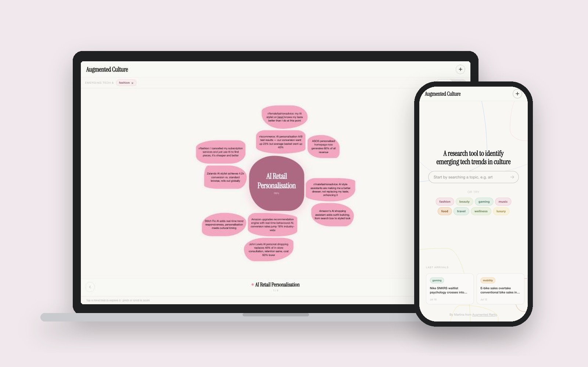
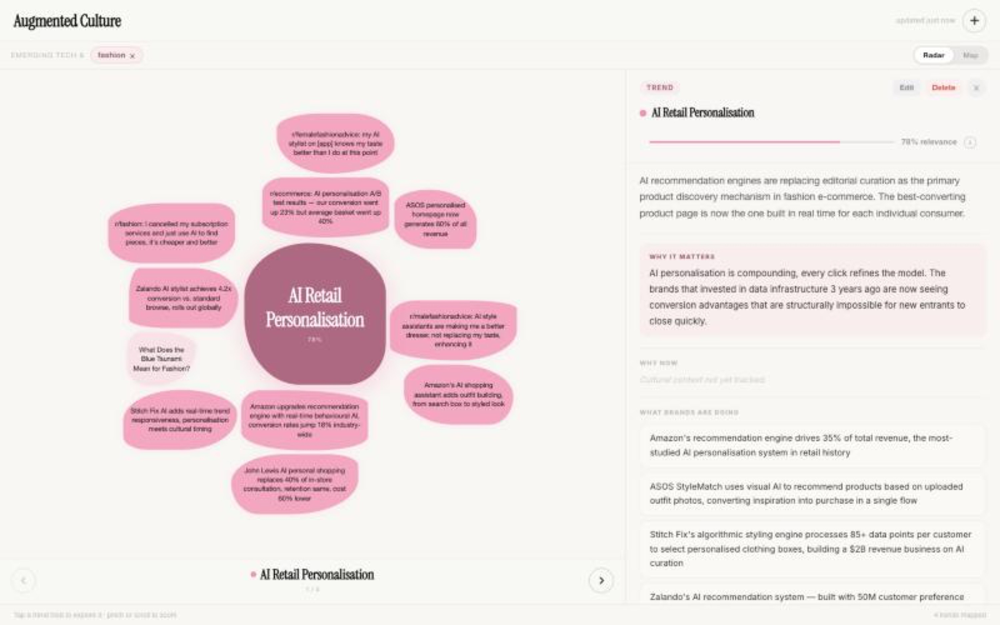
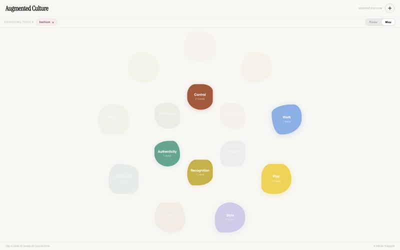
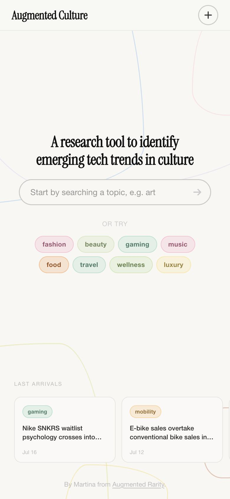
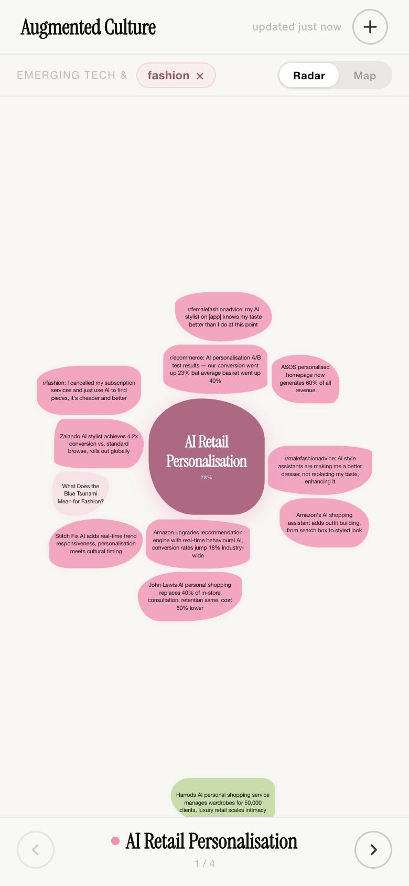

Augmented Culture
Una eina de recerca que converteix senyals culturals dispersos, des de llançaments de marques fins a fils de Reddit, en tendències emergents que pots explorar per tema.

D'un cop d'ull
El problema
La recerca de tendències està dispersa entre notícies, marques i xarxes socials, i els informes de tendències queden desfasats el mateix dia que es publiquen.
El meu rol
Dissenyadora i desenvolupadora: concepte, arquitectura d'informació, visualització de dades, UI i front end, llançat en viu.
Impacte
Una eina en viu amb 12 temes i una navegació de tema a tendència i senyal que, segons professionals d'estratègia, reflecteix com treballen.
Habilitats
Eines
Next.js, Vercel
Resultats
12
temes culturals per explorar, de la moda a les cites
3
nivells de profunditat: tema, tendència, senyal
2
vistes: Radar per a tendències, Mapa per a necessitats humanes
En viu
dissenyada, desenvolupada i llançada
Context
Vaig començar aquest projecte mentre feia el curs de Trends & Creative Strategy a Shifta by Elisava el 2025. El curs em va ensenyar com funciona la recerca de tendències. Fer-la a mà em va ensenyar com n'és de lenta i dispersa.
La recerca de tendències és caòtica. Els senyals són a tot arreu: llançaments de marques, notícies del sector, fils de Reddit, TikTok. La majoria d'informes de tendències són PDFs estàtics que queden desfasats el dia que es publiquen.
Volia una eina on comences per un tema que t'interessa i veus ràpidament què està emergint, per què importa i quines evidències ho sostenen.
Què vaig dissenyar
- Primer, cercar. Una barra de cerca i una sèrie de temes, més una franja amb els últims senyals perquè sempre hi hagi alguna cosa nova per mirar.
- Vista Radar. Cada tendència és una forma amb una puntuació de rellevància, envoltada dels senyals que la sostenen. Les notícies del sector conviuen amb les veus de persones reals a Reddit, així veus tant el que fan les marques com el que sent la gent.
- Detall de tendència. Un panell lateral amb un resum en llenguatge clar, per què importa i què estan fent ja les marques.
- Vista Mapa. S'allunya de les tendències per mostrar les necessitats humanes que hi ha a sota, com el control, el joc, l'estil, l'autenticitat i el reconeixement.
El llenguatge visual és tranquil i editorial perquè la informació densa continuï sent fàcil de llegir. Els temes tenen un codi de color, i les formes suaus i orgàniques transmeten "emergent", no "consolidat".




Cerca i temes al mòbil

Vista Radar al mòbil
Què vaig aprendre
Professionals d'estratègia em van dir que la navegació de tema a tendència i senyal reflecteix com treballen de debò. També em va mostrar el que falta abans que estigui llesta per a clients: alguns camps encara són buits, les fonts necessiten una atribució més clara i les puntuacions de rellevància s'han d'explicar millor.
És en el que estic treballant ara.
Següent projecte
Direct Booking Manager →